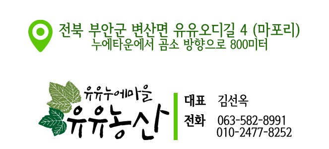
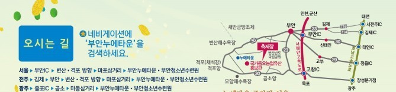

오시는길

전북 부안군 변산면 유유오디길 4 (지번: 변산면 마포리 49-3)
누에타운에서 곰소 방향으로 800미터
찾아오는 길

네비게이션에 '부안누에타운'을 검색하세요. (약도는 2019년 유유참뽕축제 안내에서 가져왔어요)
가까운 볼거리: 부안 누에타운
유유농산에서 800미터 거리에 있는, 누에와 뽕나무를 주제로 한 전시 · 체험 공간이에요.
| 주소 | 전북특별자치도 부안군 변산면 참뽕로 434-20 |
|---|---|
| 볼거리 | 누에곤충과학관(민속 양잠 기구, 곤충 표본 약 3만 점) 체험관 · 홍보관(누에 사육 시설, 지역 특산품) 어린이 탐험관 |
| 체험 | 누에고치 실 뽑기, 개미집 체험, 오디 · 뽕 체험 |
| 문의 | 063-580-4082 |
운영 시간과 입장료는 방문 전에 전화나 위 안내에서 확인해 주세요.
문의: 063.582.8991 / 010.2477.8252